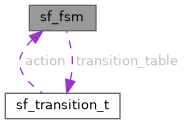

|
StateFox
|
#include <statefox.h>

Public Attributes | |
| sf_state_t | state |
| sf_transition_t const * | transition_table |
| size_t | transition_count |
| sf_state_t sf_fsm::state |
| size_t sf_fsm::transition_count |
| sf_transition_t const* sf_fsm::transition_table |